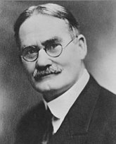
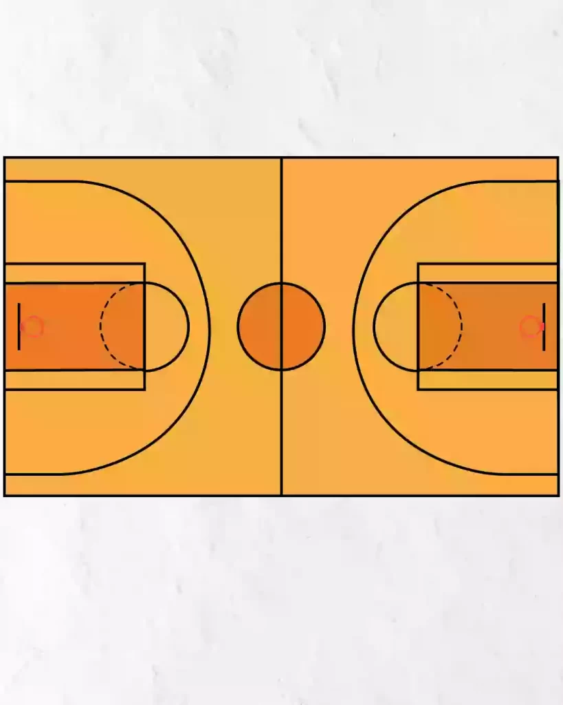
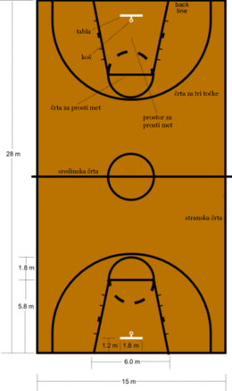
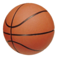

Košarka je moštveni šport, pri katerem tekmujeta dve nasproti stoječi moštvi s po petimi igralci na pravokotnem igrišču, običajno v dvorani na lesenem parketu. Cilj igre je vreči žogo v nasprotnikov koš, ki ima premer 46 cm in je nameščen na vsako stran igrišča na tablo 3 m 5 cm visoko. Košarka je eden najpopularnejših in najbolj gledanih športov na svetu poleg nogometa.Ekipa lahko doseže točke, ko doseže koš v regularnem času tekme. Dosežen koš ekipi prinese dve točki, če je dosežen bližje od črte za tri točke, ali tri točke (trojka), če je dosežen izza črte za tri točke. Ekipa z več doseženimi točkami zmaga, v primeru izenačenega rezultata pa lahko o zmagovalcu odloča podaljšek. Žogo se po igrišču lahko prenaša z vodenjem žoge ob tla ob hoji ali teku ter podajanjem. Napake pri vodenju žoge, zaradi katerih ekipa izgubi žogo, so koraki, nošena žoga in dvojno vodenje.Nedovoljen kontakt z nasprotnim igralcem je osebna napaka. V primeru osebne napake pri metu na koš ima košarkar, nad katerim je bila osebna napaka storjena, na voljo enega, dva ali tri proste mete, ki štejejo eno točko vsak. Za določene kršitve košarkarskih pravil je dosojena tehnična osebna napaka, običajno za nešportno obnašanje košarkarjev ali trenerjev. Tudi v tem primeru nasprotna ekipa izvaja proste mete, toda za razliko od navadne osebne napake zadrži žogo v svoji posesti. Pri košarki obstajajo različne tehnike meta, podaj, vodenja žoge in skokov, specializirana igralna mesta ter posebne napadalne in obrambne postavitve. Običajno višji košarkarji igrajo na položajih centra, krilnega centra ali krila, manjši ter spretnejši pri vodenju žoge in podajanju pa na položajih branilca in organizatorja.
Zgodovina

Košarka se je prav neverjetno hitro razvila in razširila po svetu, od leta svojega nastanka, 1891, ko so jo prvič zaigrali v Springfieldu, Massachusettsu, ZDA, do prvega nastopa v Evropi že naslednje leto, 1892, jo zaigrajo v Ženevi. Leta 1897 je že nastala prva profesionalna košarkarska liga - National Basket Ball League v ZDA. Dobro desetletje kasneje od njenega nastanka, leta 1904, je bila predstavljena na olimpijskih igrah v St. Louisu, prvič kot olimpijski šport pa se je igrala v Berlinu na OI 1936.
Košarka je med športi posebna v tem, da si jo je nekdo izmislil in se ni razvila iz kakšne druge oblike športa. Leta 1891 si je kanadsko-ameriški zdravnik in športni pedagog James Naismith iz Springfielda, Massachusetts, poskušal izmisliti igro, ki bi jo šolarji lahko igrali v telovadnici med dolgimi zimami. Zgodba pravi, da je na koncu napisal osnovna pravila in na zid telovadnice pribil košaro za breskve. 21. decembra 1891 je na vrata telovadnice pribil papir s prvimi 13 pravili in istega dne so odigrali prvo tekmo. Tekma se je končala z enim samim zadetkom, dosegel pa ga je William Chase. Tedaj je bilo na igrišču po devet igralcev, ker je imel Naismith v razredu 18 učencev in jih je razpolovil, da je dobil dve ekipi, igrišče pa je bilo veliko za polovico današnjega. »Basket ball« (koš-žoga), kot je ime predlagal eden od študentov, se je takoj priljubil in razširil skupaj z igranjem igre.
Prvotna pravila
Žogo se lahko vrže v katerokoli smer z eno ali obema rokama.
Žogo se lahko vodi v katerokoli smer z eno roko, vendar nikoli s pestjo.
Igralec ne sme teči skupaj z žogo, vreči jo mora z mesta, na katerem se je z njo ustavil.
Žogo je treba držati med dlanmi, roke ali telo se ne smejo uporabljati.
Brez potiskanja, spotikanja ali kakršnegakoli dotikanja nasprotnika. Prva kršitev tega pravila se šteje kot prekršek, v drugo se igralca diskvalificira do naslednje točke. V primeru, da je očitna namera škodovati nasprotniku, se igralec izključi za celotno igro.
Prekršek je udarjanje na žogo s pestjo, kršitev členov 3 in 4 in kot je opisano v členu 5.
Če katera stran naredi pet prekrške zaporedoma, se to šteje v dobro nasprotniku.
Cilj (koš, točka) se doseže, ko je žoga vržena v koš in ostane tam. Če žoga postoji na robu (obroču) in nasprotnik premakne njo ali koš, se šteje kot veljavni cilj (točka).
Ko gre žoga izven igrišča, se vrže v polje in jo prva oseba po dotiku vodi naprej. V primeru spora se posreduje tako, da se jo vrže naravnost v polje. Metalec ima na razpolago pet sekund. Če si ga vzame več, mora preiti žoga k nasprotniku.
Razsodnik se mora seznaniti glede napak in o tem obvestiti sodnika. On ima moč, da diskvalificira ljudi v skladu s členom 5.
Sodnik razsoja glede žoge in se odloči, kdaj je žoga v igri, izven polja, kateri strani pripada, ter meri čas. On se odloči, kdaj je bil pravilno dosežen cilj in vodi zadeve, ki jih običajno izvaja zapisnikar.
Igralni čas je dvakrat po petnajst minut, vmes je pet minut počitka.
Stran, ki doseže največ točk v tem času, se razglasi za zmagovalca.
Točkovanje

Število točk se opravi z dodeljevanjem točk za vsak doseženi koš glede na mesto, kjer se je nahajal tisti, ki je zadel, in glede na vrsto meta samega:
1 točka se dodeli za vsak koš, izvajan iz prostih metov,
2 točki se dodelita za vsak koš, dosežen iz strelov znotraj območja, omejenega s črto za 3 točke,
3 točke se dodelijo za vsak koš, dosežen zunaj območja, ki ga meji črta za 3 točke, pri tem pa se strelec ne sme dotakniti niti same črte. Mejno črto za tri točke so najprej uvedli v NBA leta 1979 nato pa leta 1983 še v tekmovanjih pod okriljem FIBA.
Če je nad igralcem med strelom narejen prekršek, se mu v primeru zgrešenega koša dodeli toliko prostih metov, za kolikor je bil izvajan strel, se pravi za dva ali tri mete. V primeru prekrška in doseženega koša, se igralcu dodeli dodatni prosti met. V primeru nešportnega prekrška in tudi tehnične napake, se dosodi dva prosta meta in še posest žoge za ekipo, nad katero je bila storjena kršitev. V primeru tehničnih ali nešportnih napak se med izvajanjem prostih metov ne skače za odbito žogo, kot je to v primeru, ko se izvaja proste mete po dosojeni osebni napaki.
Košarkarska oprema

Osnovna, oziroma najnujnejša oprema za igranje košarke, sta teren, igrišče s košema in posebej za ta šport značilna žoga za košarko. Za igranje na višji, tekmovalni ravni, je zahtevana še dodatna, spremljevalna oprema. Tako je potrebna ura za merjenje igralnega časa skupaj z zaslonom za njegovo spremljanje, zraven je še značilna opozorilna sirena, ki opozarja na iztek dovoljenega časa za posamezni napad. Potem je tu še tabla oziroma osrednji podatkovni zaslon za spremljanje rezultata in po možnosti statističnih podatkov, s katerimi se lahko sproti spremlja dosežke posameznih košarkarjev.
Igralni teren
Prostor za igranje košarke vsebuje igralno polje, igrišče, ki se v košarkarskem žargonu imenuje parket, ter na obeh skrajnih koncih tega polja nameščena koša.
Igrišče
V mednarodni košarki je v regularni rabi igrišče po standardih organizacije FIBA, ki meri v dolžino 28 metrov, v širino pa 15 m. V ZDA so igrišča za meter daljša (29 x 15 m), takšna kot so po predpisih v njihovi najvplivnejši ligi, v NBA. Za igralno podlago se večinoma uporablja leseni parket. Bili so sicer poskusi z uporabo modernejših materialov, predvsem iz umetnih mas, vendar se je klasična podlaga obdržala zaradi svojih primernih značilnosti, predvsem oprijema in odboja.
Koš
Glavni cilj igralcev je zadeti koš. Ta se skozi zgodovino, razen povsem na začetku, ne spreminja. Napredoval je od navadne košare za sadje do tega, da so mu odstranili dno. Potem ko so lahko dobili žogo skozenj, so kmalu ugotovili, da bi bilo bolje, če bi imel mehke stranice, da bi bilo varneje ob dotikih z njim. Tako je koš povsod, kjer se igra košarko, isti, poleg ogrodja, na katerem je nameščen, ga sestavljajo še tabla, kovinski obroč in že omenjena mrežica. Prav tako je standarizirana tudi njegova namestitev, obroč je vedno od tal oddaljen točno 3,05 metra. Postavljen je na sredino po širini, pomaknjen od zunanjega roba igrišča 1,2 m znotraj vanj. Ker so mere in namestitev koša vedno in povsod enake, bi že premik za nekaj centimetrov imel za strelce zelo negativne posledice.
Žoga

Za igranje košarke se uporablja za ta šport značilno žogo, ki je napihljiva, izdelana ali iz gume, ali sintetičnih kompozitov, ali pa tradicionalno iz usnja. Značilnosti košarkarske žoge sta še njena prepoznavna oranžno–rjava barva in njena groba površina, ki zagotavlja boljši oprijem za roko, ki jo drži. Površina krogle je skoraj vedno deljena z »rebri«, ki so potisnjeni pod njeno površino v različnih konfiguracijah in so po navadi v kontrastni barvi. Oranžna površina s črnim rebri in zraven dodan logotip je tradicionalna oblikovna shema, poznamo pa še številne druge kombinacije, ki se prodajajo v različnih barvah.